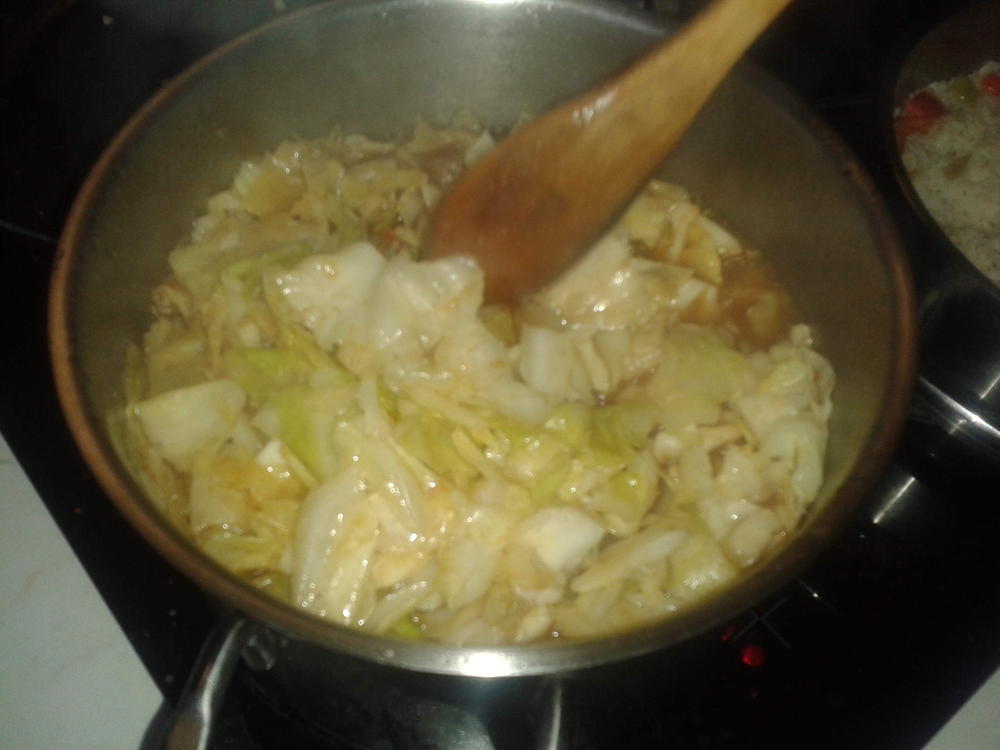

<< Home
The Slop

The ingredients:
- A 20 piece McDonalds nugget meal w/ Large Dr Pepper (no ice)
- A Chicken Express 7 Express Tender Dinner w/ Unsweet Tea and macaroni n' cheese
- A blender
The process of emulsification:
- Pray to whatever you belive in.
- If you believe in nothing, hope.
- First pour the Dr Pepper, Unsweet Tea, and Macaroni into the blender.
- Blend once, enough to make the mac into a paste.
- Then blend tender by tender into the blender whilst it runs.
- Once the tenders have been sacrificed, the nuggets must follow.
- Due to the volume of sin dispensed into the blender you may have to make due by making "slop chunks" via blending smaller parts of the whole
- Once the fries have joined the collective you can be sure you have created slop!